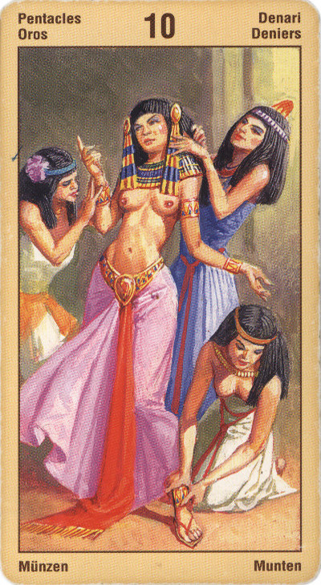

Десятка Пентаклей
Прямое положение: доходы, богатство; семейные дела, архивы; происхождение.
В раскладе – успех задуманного дела, хотя путь к успеху долог и труден, и ощущение покоя и счастья после его завершения. Хорошие отношения между родителями и детьми.
Десятка Денариев обозначает период богатства, стабильности, полноты жизни и уверенности в завтрашнем дне. При этом богатство и полнота могут проявляться как на внешнем плане, так и на внутреннем.
Ловушка. Попытка удержать "сегодня" ради его полноты и богатства.
В прямом положении карта символизирует богатство, процветание, безопасность, надежность, семью и семейные дела, наследование, предков и дом. Нечто уже выполнено и завершено, и настала необходимость перехода на другую ступень. Это касается и взаимоотношений и карьеры.
Карта достигнутого, прочного положения в семье, бизнесе. Наследство, дары, выход на пенсию. Преобретение имущества. Семейная фирма.
В перевернутом виде – неоправданный риск, неудачные вложения, возможные потери, надежда на авось, рассеянность, нечестная игра, отсутствие поддержки.
Отрицательное значение: риск, потеря, грабеж, ущерб. Несчастье в семье, проблемы с выплатой зарплаты или пенсии.